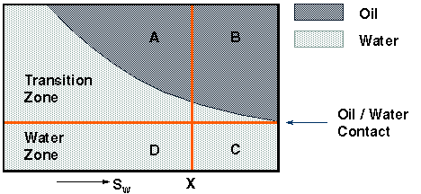

In the production of a reservoir model it is important to ensure that the model is initialized with the correct mobile quantities of each fluid as well as the correct quantities of total fluid-in-place. If this is not done the recovery factors of each fluid are predicted erroneously.
The fine scale equilibration algorithm predicts too small an initial mobile oil-in-place even though the fluid volumes-in-place are predicted correctly. To see why the mobile fluids-in-place are underestimated consider the fine scale equilibration of an oil-water system. The variation of water saturation with depth for a typical grid cell that intersects the oil-water transition zone is shown in the following figure.

The water saturation at the value X is . is the pore volume.
The initial volume of oil-in-place is
The correct volume of mobile oil-in-place is
The volume of mobile oil-in-place calculated by the fine scale equilibration procedure is , which leads to an underestimate of the total volume of mobile oil of .
The initial volume of mobile oil-in-place is underestimated in cases where there is a negligible transition zone. Note that the problem may also arise in the calculation of the initial mobile volumes of other phases.
A facility based on the end-point scaling option is available in ECLIPSE to provide correct estimates of both the total and mobile fluids-in-place. The method uses the fine scale equilibration option and computes pseudo values for the critical saturation of each phase in each grid cell. The procedure adopted is as follows:
if
if
where is the pore volume of layer i
| [Eq. 165.1] |
| [Eq. 165.2] |
This calculation of each pseudo critical phase saturation ensures that the critical saturations are only modified in the vicinity of the fluid contacts in the initial state. During the simulation phase, the relative permeability curves are rescaled using the pseudo critical saturations computed above. The pseudo critical phase saturations are assumed to be isotropic; if directional scaling is enabled, then the directional counterparts of the pseudo critical phase saturations are set equal to their isotropic form.
The mobile fluid-in-place calculation is activated using the MOBILE flag in the keyword EQLOPTS of the RUNSPEC section. In a three-phase run, the initial mobile fluid-in-place correction is applied to all the critical end points SOWCR, SOGCR, SWCR and SGCR. In an oil-water system it is applied only to SOWCR and SWCR. In a gas-oil system it is applied only to SOGCR and SGCR. In a gas-water system it is applied only to SWCR and SGCR. Output of the processed end points used in the simulation can be requested with the keywords SOWCR, SOGCR, SWCR and SGCR (items 24-27) in the RPTSOL keyword (the output is headed by keywords PSOWCR, PSOGCR, PSWCR and PSGCR).